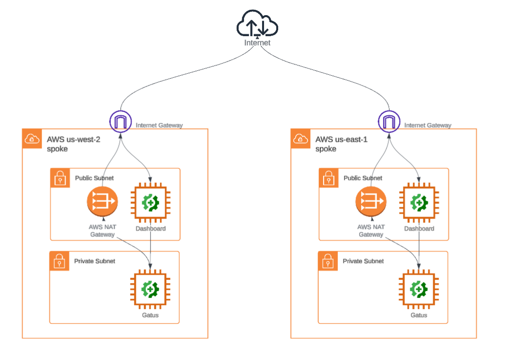

Introduction#
Summary#
The Aviatrix Certified Engineer Multicloud Network Automation Specialty (IaC) course brings the concepts of DevOps together by automating network infrastructure through hands-on labs. Students can expect to enter the training with no coding background and complete the training with an understanding of how to use IaC tools (GitHub and Terraform Cloud) to onboard, monitor, extend, and protect cloud networks at scale using code.
Course Format and System Requirements#
The ACE Automation Specialty course is in a virtual, self-paced format with lecture content and 4 hands-on labs.
Duration: Approximately 4 Hours
Course Objectives#
Learn how to onboard, monitor, and protect existing cloud networks by deploying the Aviatrix Cloud Native Security Fabric (CNSF) using the Aviatrix Terraform provider.
Build a CI/CD pipeline using GitHub actions and Terraform HCL to implement changes to the CNSF based on new security requirements.
Understand how Security, Networking, and Application teams can all collaborate via code to implement those requirements and reduce friction between those teams.
Build, extend and protect multicloud networks without prior deep coding or CSP experience by leveraging AI and the Aviatrix Terraform provider.
Intended Audience#
DevOps Teams
SecOps Teams
NetSecOps Teams
Operations Teams
Infrastructure Teams
Network Topology#
This course will guide you through the deployment and configuration of the Aviatrix Cloud Native Security Fabric starting with an initial topology of existing networks and workloads:
Initial#

Lab1#
Lab1 will have you onboard and monitor these networks with Aviatrix spoke gateways.
Lab2#
Lab2 will have you protect the Internet-bound egress of these networks.
Lab3#
Lab3 will have you connect and secure the east-west traffic between these networks.

Lab4#
And finally, lab4 will have you extend this network to another cloud using code you’ve developed yourself.

Software Requirements#
None. All software is provided by the training environment.
Prerequisites#
An ACE Associate certificate.
A GitHub account.
A Terraform HCL account.